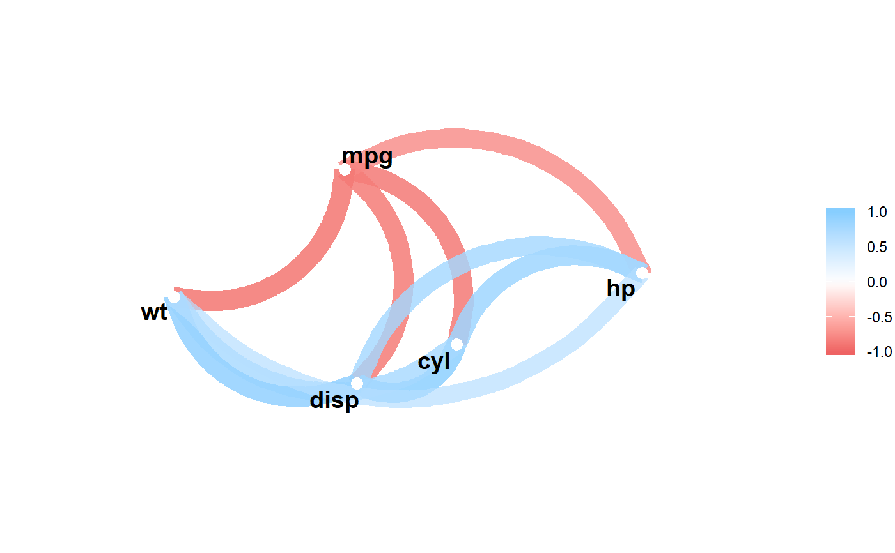

Apply a predicate function to each colum of correlations. Columns that
evaluate to TRUE will be included in a call to focus.
focus_if(x, .predicate, ..., mirror = FALSE)
| x | Correlation data frame or object to be coerced to one via
|
|---|---|
| .predicate | A predicate function to be applied to the columns. The
columns for which .predicate returns TRUE will be included as variables in
|
| ... | Additional arguments to pass to the predicate function if not anonymous. |
| mirror | Boolean. Whether to mirror the selected columns in the rows or not. |
A tibble or, if mirror = TRUE, a correlation data frame.
library(dplyr) any_greater_than <- function(x, val) { mean(abs(x), na.rm = TRUE) > val } x <- correlate(mtcars)#> #> #>x %>% focus_if(any_greater_than, .6)#> # A tibble: 6 x 6 #> rowname mpg cyl disp hp wt #> <chr> <dbl> <dbl> <dbl> <dbl> <dbl> #> 1 drat 0.681 -0.700 -0.710 -0.449 -0.712 #> 2 qsec 0.419 -0.591 -0.434 -0.708 -0.175 #> 3 vs 0.664 -0.811 -0.710 -0.723 -0.555 #> 4 am 0.600 -0.523 -0.591 -0.243 -0.692 #> 5 gear 0.480 -0.493 -0.556 -0.126 -0.583 #> 6 carb -0.551 0.527 0.395 0.750 0.428